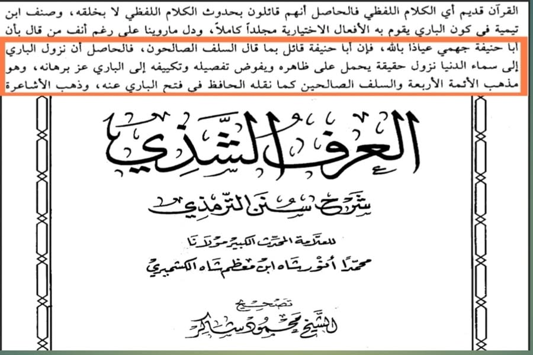

দেহবাদি আকিদাহ যখন হানাফি মাজহাবে— (৩)
২৩ জুলাই, ২০২৩
দেহবাদি আকিদাহ যখন হানাফি মাজহাবে— (৩)
এ পর্বে আমরা আলোচনা করব ইমামুল হিন্দ, সর্বজন স্বীকৃত মুহাক্কিক শাহ আনওয়ার কাশ্মিরি রাহ-কে নিয়ে। তালিবুল ইলম মাত্রই তাঁকে চেনে থাকবে। তিনি বলেন—
فالحاصل أن نزول الباري إلى سماء الدنيا نزول حقيقة يحمل على ظاهره ويفوض تفصيله وتكييفه إلى الباري عز برهانه، وهو مذهب الأئمة الأربعة والسلف الصالحين
সারকথা, সৃষ্টিকর্তা নিকটতম আকাশে অবতরণ করাটা হাকিকি (বাস্তবিক) অবতরণ; একে বাহ্যিকের ওপর প্রয়োগ করা হবে এবং তার বিশদ বিবরণ ও ধরণ আল্লাহর কাছে তাফউইদ (ন্যাস্ত) করা হবে— এটিই চার ইমাম ও সালাফে সালেহিনের মাজহাব। [আল-আরফুশ শাজি-১/৪১৭]
বক্তব্যটা ভালো করে পড়ুন এবং দেখুন, তিনি কীভাবে নুযুলের জাহিরি অর্থ গ্রহণ করেছেন। শেষ রাত্রে মহান আল্লাহ প্রথম আকাশে এসে বান্দার রিযক প্রদান ও ক্ষমার ঘোষণা দেয়ার হাদিসকে তার প্রকৃত অর্থের ওপর প্রয়োগ করেছেন কোনো তাওয়িল কিংবা সংকোচ ছাড়াই।
একই আকিদাহ ইমাম আবু হানিফা রাহ. রাখতেন। ইমাম বাইহাকি রাহ. বর্ণনা করেছেন—
سئل أبو حنيفة عنه (النزول) فقال: ينزل بلا كيف.
ইমাম আবু হানিফাকে অবতরণের ব্যাপারে জিজ্ঞেস করা হলে তিনি বললেন, “তিনি (আল্লাহ) অবতরণ করেন কোনো কাইফ-ধরণ ব্যতীতই।”
[আল-আসমা ওয়াস-সিফাত, বাইহাকি—২/৩৭৮]
নুযুলের প্রতি বিশ্বাস রাখতেন ইমাম মোহাম্মদ রাহ. (আবু হানিফার ছাত্র) তিনি বলেন—
الأحاديث التي جاءت أنَّ الله يهبط إلى سماء الدنيا ونحو هذا من الأحاديث إن هذه الأحاديث قد روتها الثقات، فنحن نرويها، ونؤمن بها، ولا نفسرها.
যে-সকল হাদিসে আল্লাহ দুনিয়ার আকাশে অবতরণ করেন বলে উল্লেখ হয়েছে এবং অনুরূপ হাদিসগুলো— এই হাদিসগুলো বিশ্বস্ত ব্যক্তিরা বর্ণনা করেছেন। ফলে আমরা সেগুলো বর্ণনা করি, বিশ্বাস রাখি এবং তার কোনো ব্যাখ্যা-বিশ্লেষণ করি না। [শারহু উসূলি ই'তিকাদি আহলিস সুন্নাহ, লালকাঈ— ৩/৪৮০]
অথচ, আশআরি ও মাতুরিদি আকিদাহ অনুযায়ী আল্লাহর নুযুল তথা অবতরণকে হাকিকি অর্থে বিশ্বাস করা দেহবাদ। দেখুন ইমাম ইবনু হাজার রাহ-এর বক্তব্য। নুযুলের হাদিসের ব্যাখ্যায় তিনি লেখেন—
فمنهم من حمله على ظاهره وحقيقته وهم المشبهة.
তাদের মধ্যে কেউ কেউ (অবতরণকে) জাহিরি (বাহ্যিক) ও হাকিকি (প্রকৃত) অর্থের ওপর প্রয়োগ করে থাকে। এরা হল মুশাব্বিহাহ (সাদৃশ্যবাদি) [ফাতহুল বারি-৩/৩০]
অর্থাৎ আশআরিদের মতে আল্লাহর অবতরণকে সাব্যস্ত করাই তাশবিহ ও দেহবাদ। তাহলে শাহ আনওয়ার কাশ্মিরিও দেহবাদি, নিশ্চয়ই। নিশ্চয়ই ইমাম আবু হানিফা ও তাঁর ছাত্র মোহাম্মদ রাহ. দেহবাদি(?)
শাইখুল ইসলাম ইবনু তাইমিয়া রাহিমাহুল্লাহ যদি নুযুলের হাকিকি অর্থ গ্রহণ করায় দেহবাদি হয়, তাহলে হানাফি ইমামরা দেহবাদি কেন নয়? কালামিরা কি পারবে তাদের বাপ-দাদা-আকাবিরদের দেহবাদ থেকে রক্ষা করতে?
#দেহবাদি
